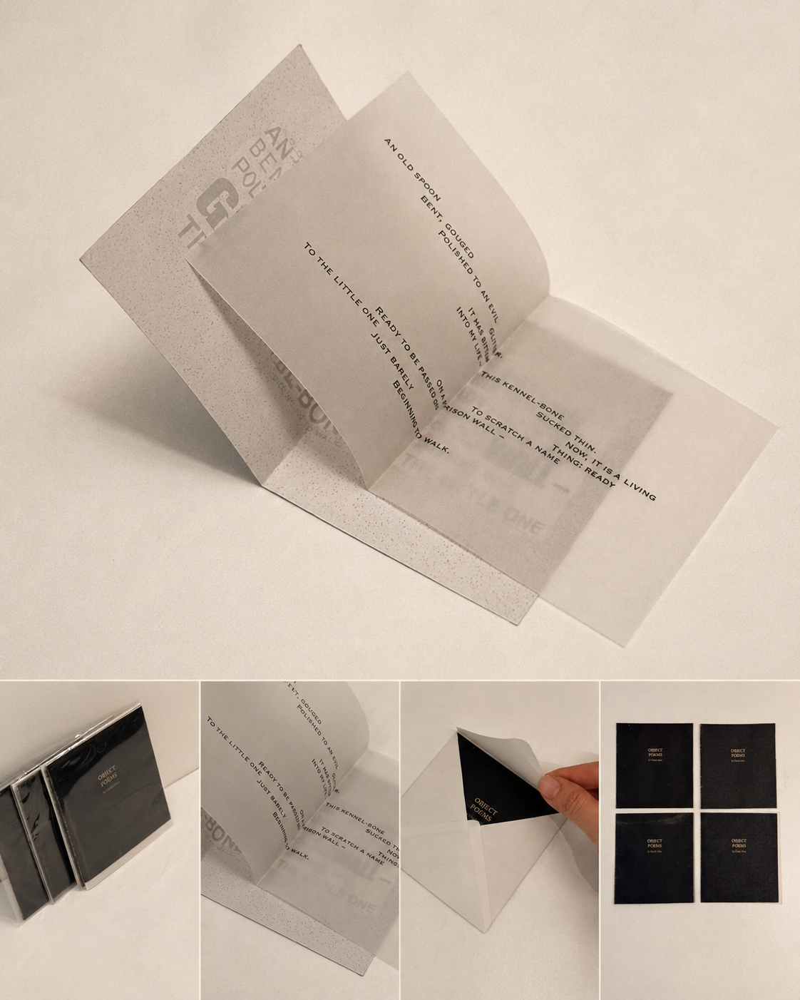

Early Work / 2016
Object Poems
A small card-based work developed from poetry, using translucent paper to translate reading into a layered object. The work marks an early interest in the relation between text, material surface, and intimate forms of handling.
